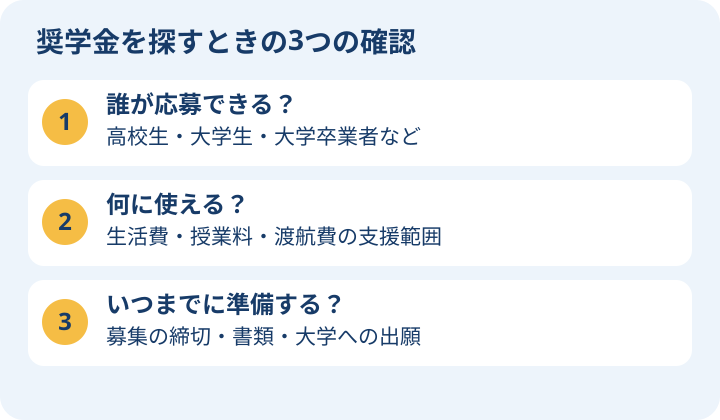

奨学金は「誰向けか」から探そう
奨学金は、勉強に必要なお金の支援です。返済不要の「給付型」と、卒業後などに返す「貸与型」があります。名前だけで選ばず、対象者・金額・期間・返済の有無を一緒に確認しましょう。
高校生へ：「大学を卒業した人向け」の募集は、高校卒業後の進学には通常使えません。今の自分が応募できる制度かを最初に確認します。保護者の方へ：採用が決まる前の支援金を、確実な収入として家計に入れずに計画を立てましょう。

学位と目的から探す
学士、修士、博士・研究、短期語学研修では使える奨学金が違います。大学への出願と奨学金への申請は別手続きです。奨学金の締切が大学出願より先になることもあります。
ドイツ学術交流会（DAAD）の奨学金
DAAD日本の「日本から応募可能な奨学金」で、自分の学位・分野・渡航目的に合う募集を確認します。修士向け、芸術分野、研究、夏期講座などで対象と支援内容が異なります。
生活費支給、保険、渡航費等の扱いは募集ごとに確認してください。採用されても大学の授業料が必ず免除されるとは限りません。募集年度、滞在歴、卒業からの年数、語学証明にも注意します。
Deutschlandstipendium・大学・財団
Deutschlandstipendiumは、参加大学が選考する月300ユーロの支援制度です。大学の募集時期、対象、選考書類を確認します。学費・生活費すべてをまかなう制度ではありません。
大学独自の支援や財団の奨学金は、成績だけでなく活動、専門、社会参加、語学力等が条件になる場合があります。JASSO等の日本側の制度も、正規留学と交換留学を区別して探しましょう。
申請までのチェックリスト
- 自分の国籍・居住地・学位・専攻・渡航時期が対象か
- 給付か貸与か、金額・支給期間・授業料の扱い
- 大学の合格通知をいつ提出するか
- 履歴書・志望理由・成績・推薦状・語学証明の指定
- 他の奨学金との併給条件、採用後の報告義務
- 不採用時にも成立する自己資金の計画
締切を確認して、早めに準備する
奨学金の申請は大学出願より早く締め切られる場合があります。希望する入学の1年前を目安に制度を探し、募集年度・対象者・締切・推薦状の依頼時期を一覧にして準備します。これは準備の目安で、実際の締切は各募集要項を確認してください。
高校卒業後の進学と、大学卒業後の進学を分ける
DAAD（ドイツ学術交流会）の日本向け募集には、大学卒業者向けの修士留学、芸術分野、博士・研究向けなどがあります。夏期講座の支援も大学在籍などの条件があります。「ドイツ留学なら高校生も同じ奨学金をもらえる」という制度ではありません。
高校から学部へ進む場合は、志望大学の奨学金窓口、日本側の海外進学支援、財団の募集で、学部への正規留学が対象かを探します。正規留学は海外大学で学位取得を目指す留学、交換留学は在籍する大学の協定などで一定期間学ぶ留学です。対象になる制度が異なります。
募集要項を読むためのチェック例
- 対象：高校卒業予定者か、大学在籍者か、学士号を取得した人か。
- 支援範囲：生活費だけか、授業料・渡航費も含むか。
- 準備：成績証明、語学試験、推薦状、志望理由書をいつ用意するか。
- 不足額：支給額を引いても家族が負担する費用はいくらか。
推薦状は先生などに書いてもらう書類、志望理由書は「何を学び、なぜその大学に行きたいか」を説明する書類です。募集ごとの指定に沿って準備します。
初めて読む人のための用語メモ
- DAAD
- Deutscher Akademischer Austauschdienstの略で、日本語名はドイツ学術交流会。留学・研究交流や奨学金を支える団体です。
- Deutschlandstipendium
- ドイツの参加大学が選考する奨学金。大学ごとの応募条件を確認します。
- JASSO
- 日本学生支援機構。日本側の奨学金・海外留学支援情報を確認する窓口です。
- 給付／貸与
- 給付は原則返済不要の支援、貸与は借りるお金です。契約や返済条件を読みます。
- 併給
- 複数の奨学金を同時に受け取ること。認められる組み合わせは制度ごとに異なります。
- 募集要項
- 対象者・締切・必要書類・選考方法などをまとめた公式の応募ルールです。
情報源
確認日：2026年10月9日。出願年度・課程・国籍によって条件が異なります。申請前に公式案内を確認してください。